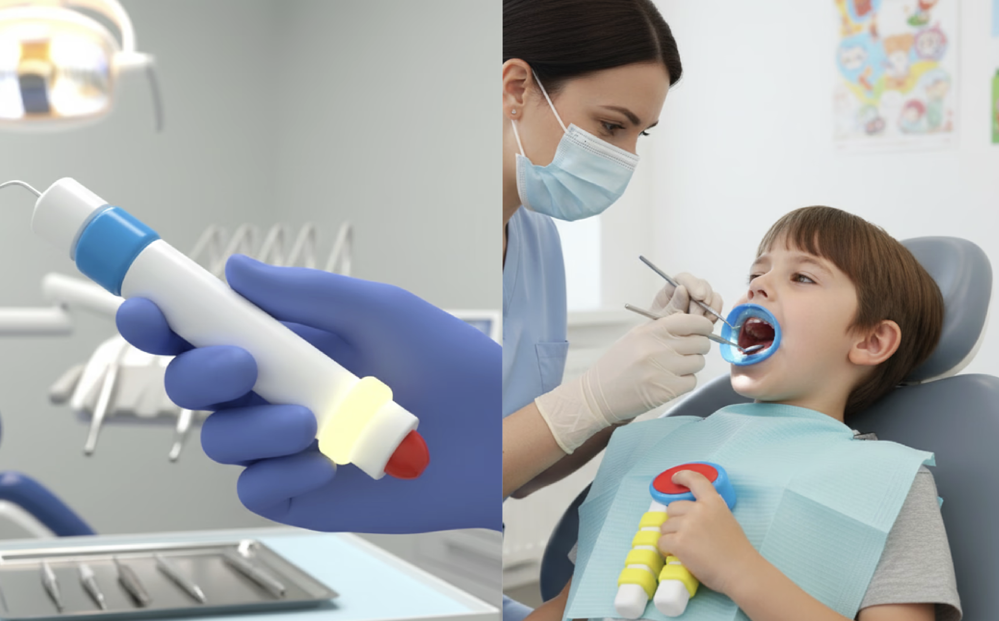
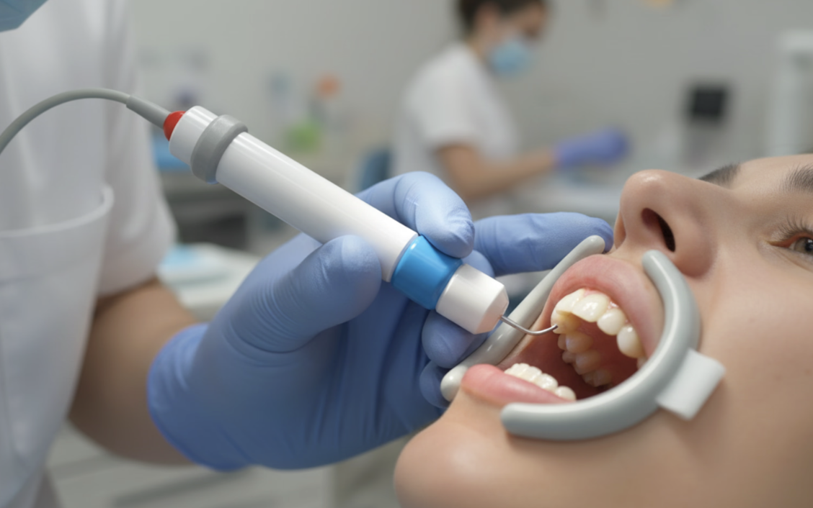
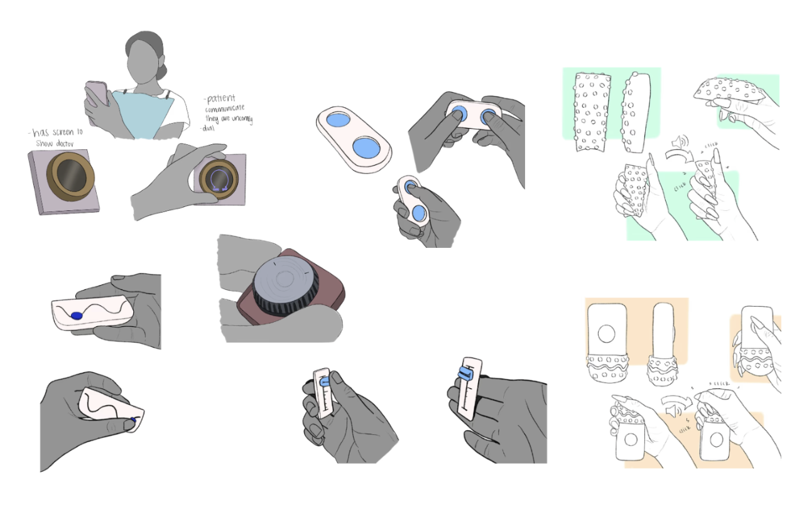
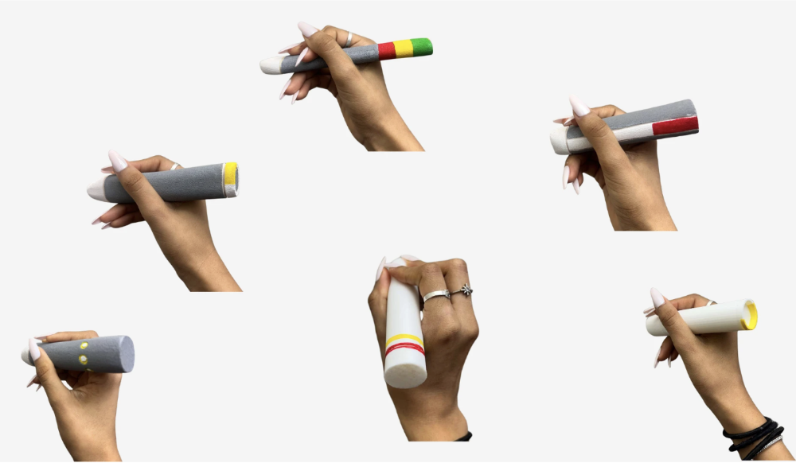
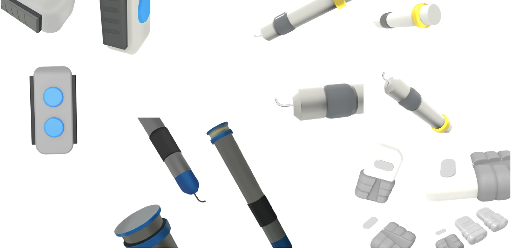
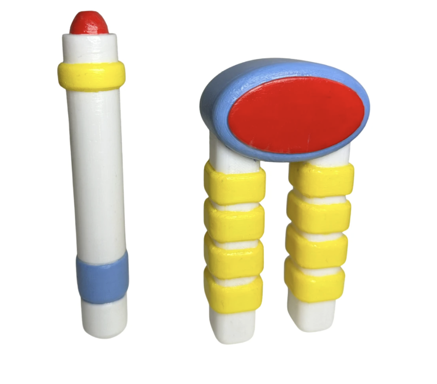
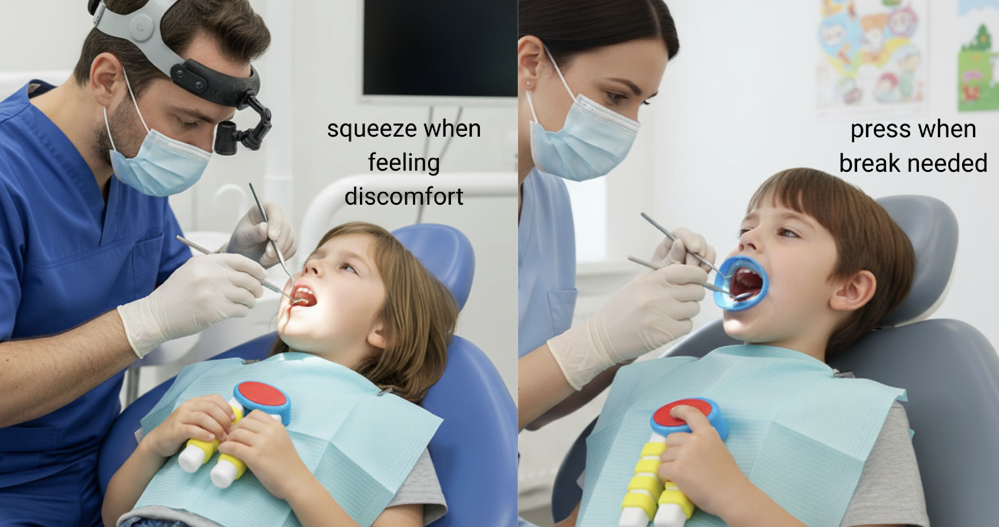
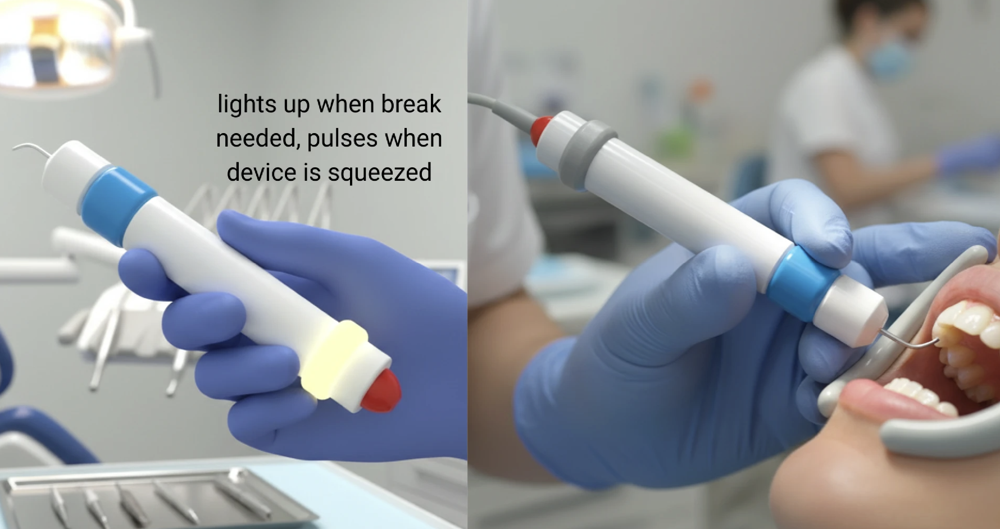

.✦ ݁˖ UltraSonic Scaler Redesdign

A pediatric dental system that pairs a stress-relief squeeze device with a light-responsive scaler to help dentists instantly recognize when a child is in distress.
Duration: 2 Months

I redesigned the ultrasonic scaler for kids to feel less intimidating while creating a simple way for young patients to communicate discomfort to the dentist during treatment.
Exploration
I began by exploring soft, handheld squeeze forms that allowed children to nonverbally signal discomfort while keeping their hands engaged during treatment.

To ensure seamless communication, I designed the squeeze device to wirelessly connect to the ultrasonic scaler, activating a subtle light indicator, minimally distracting for the patient, yet clearly visible to the dentist from all angles.

I aimed to create a seamless family between the scaler and the squeeze device for a cohesive pediatric dental experience..


StoryBoard

